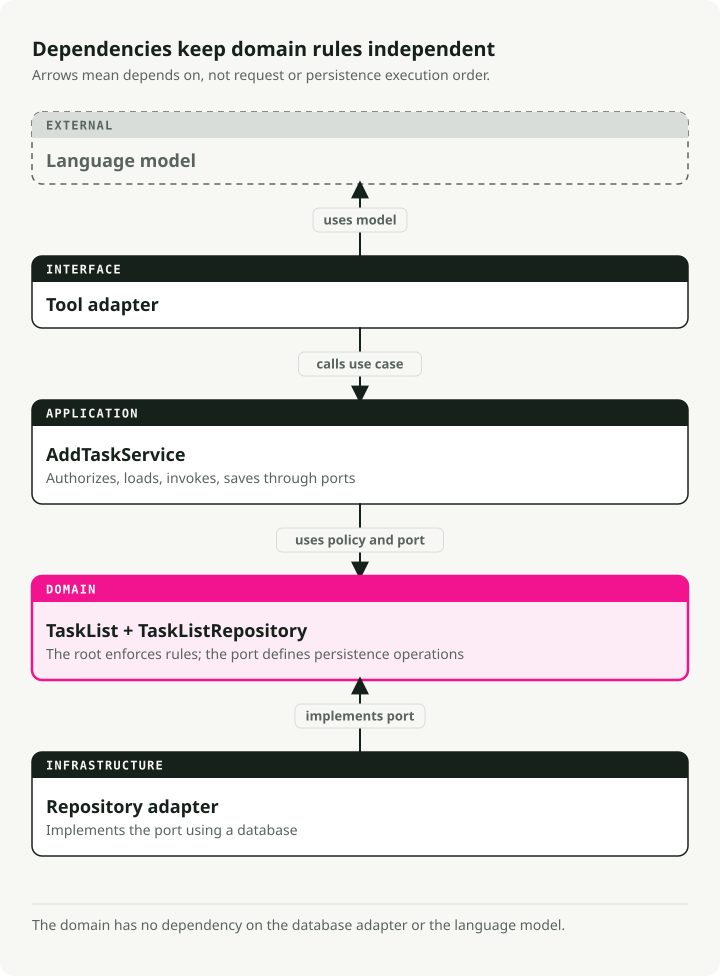
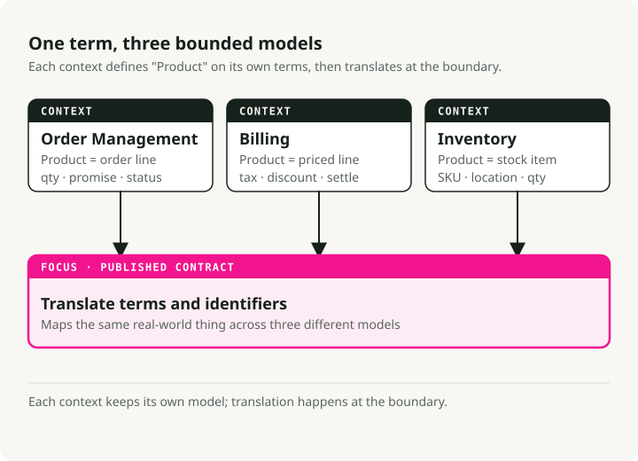
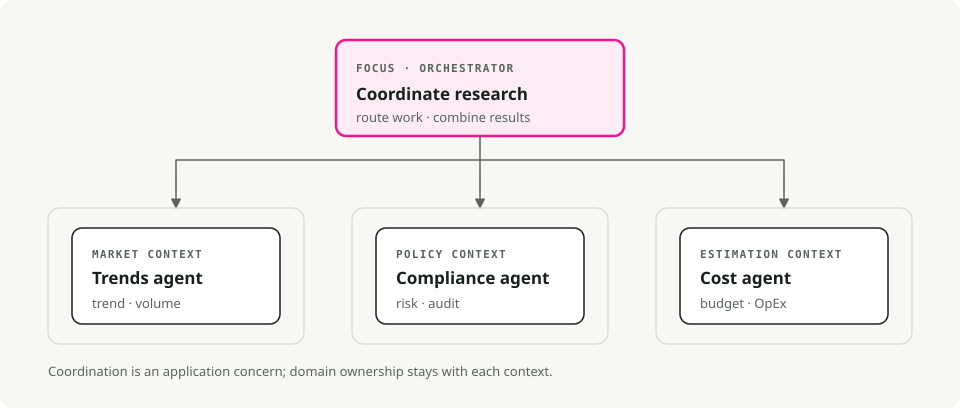
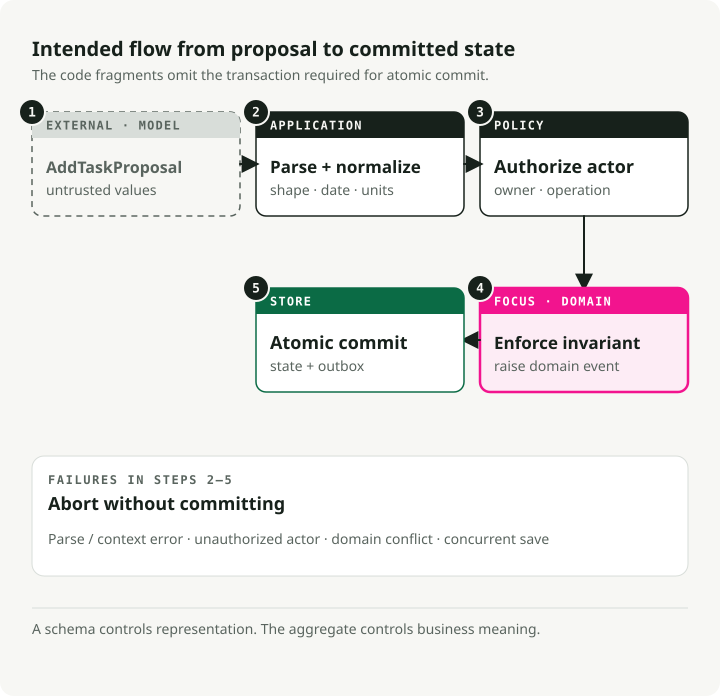
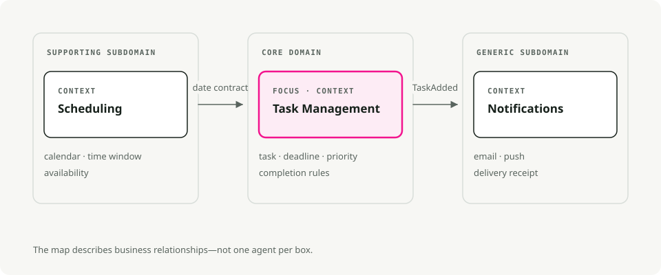

Domain-Driven Design for AI Agents: Bounded Contexts, Tools, and Business Rules
TL;DR
Domain-driven design (DDD) gives AI agent teams a shared vocabulary and clear seams between subsystems. Use it when your prompts have drifted from the business and your rules are scattered across templates.

The vocabulary problem in agent systems
Agent projects often fail when prompts, code, and business processes use different terms. Compliance asks for a "policy check," but the implementation exposes process_data(). The vague name hides the rule being applied, so requirements drift and later changes become risky.
DDD fixes this by putting the business domain at the center. Not the database schema. Not the prompt template. The actual real-world process you are trying to model. The practical effects:
- Shared language. Product, ops, and engineering all use the same words. When compliance says "refund request", that is what appears in your code, prompts, and documentation.
- Focused scope. You build what matters: the core workflows and the rules someone actually owns. Less glue code that breaks when requirements shift.
- Adaptability. When policies change, you update one well-defined slice instead of hunting through a monolith.
This matters most in domains where rules change often, such as finance, healthcare, and regulated operations. Clear boundaries show where each policy belongs and who owns it.
Strategic building blocks
DDD is a toolkit of patterns rather than a single idea. It is usually split into two halves:
- Strategic Design: the "big picture" stuff. Defining boundaries, teams, and how systems talk. This is essential for multi-agent systems.
- Tactical Design: the code-level patterns (Entities, Aggregates) that keep your agent's internal logic clean.
The concepts below are the ones you will actually use day to day.
Ubiquitous language
The shared vocabulary that shows up everywhere: meetings, documentation, prompts, method names. There is no translation layer between "business speak" and "code speak".
If compliance says "policy check", your method is run_policy_check(), not process_data(). If doctors say "admit patient", you write admit_patient(), not add_user().
class PatientRegistry:
def admit_patient(self, patient_id: str) -> None:
"""Admit a patient to the registry - term used by medical staff."""
...
When the language in code matches the language in the room, requirements changes show up as obvious renames in one place. You stop debating what process_data was supposed to do.
Bounded contexts
Large systems need explicit boundaries. Why? Because the same word means different things in different parts of the business.
Take "product" in e-commerce. In the Inventory context, a product is a catalog item with SKUs and stock counts. In the Billing context, it is a line item with pricing rules and tax calculations. In Order Management, it is a quantity and a delivery promise.
Bounded contexts let each subdomain have its own definition without conflict. Translation layers or interfaces connect them when they need to talk.

This keeps each model small and prevents one giant "product" object that has to satisfy three teams at once.
Entities and value objects
These are the basic building blocks of your domain model.
Entities have identity that persists over time. A Task with ID 123 is the same task even if you change its description, status, or due date. Two entities are equal if they have the same ID, regardless of their attributes.
from pydantic import BaseModel
class SupportTicket(BaseModel):
ticket_id: str # This is the identity
customer: str
issue: str
status: str = "OPEN"
def close(self) -> None:
if self.status != "OPEN":
raise ValueError("Ticket already closed")
self.status = "CLOSED"
Value objects have no identity. They are defined entirely by their attributes. Two TimeSlot objects with the same start and end times are interchangeable. Value objects are immutable; instead of mutating one, you create a new one.
from pydantic import BaseModel
class TimeSlot(BaseModel):
start: str # e.g., "2025-10-18 09:00"
end: str # e.g., "2025-10-18 10:00"
@property
def duration(self) -> int:
# Compute duration from start to end
...
Use entities for things that have lifecycles (Order, User, AgentSession). Use value objects for descriptions and measurements (EmailAddress, Priority, Location).
Aggregates
Aggregates are clusters of related entities and value objects that get treated as one unit. Inside an aggregate, business rules must always hold true. That is the whole point.
Every aggregate has one aggregate root, the entity that controls access to everything inside. Want to modify something in the aggregate? Go through the root. The root enforces invariants so the aggregate cannot land in a broken state.
from datetime import date
from pydantic import BaseModel, Field
class Task(BaseModel):
id: str
description: str
completed: bool = False
class Plan(BaseModel): # This is the aggregate root
id: str
tasks: list[Task] = Field(default_factory=list)
def add_task(self, task: Task) -> None:
# Business rule enforced here: no duplicate task IDs
if any(t.id == task.id for t in self.tasks):
raise ValueError("Task ID already exists")
self.tasks.append(task)
External code never touches the tasks list directly. It always calls add_task(). That is what guarantees the "no duplicate IDs" rule cannot be violated. When you save to a database, you typically save the whole aggregate at once.
Repositories
Repositories hide the persistence layer. From the domain's point of view, you call save(plan) and get(plan_id). The fact that those calls eventually hit Postgres or Redis is somebody else's problem.
Two payoffs come out of this. Tests can use an in-memory repository instead of mocking database calls. And when you eventually swap SQLite for something heavier, the business rules do not move.
from abc import ABC, abstractmethod
from pydantic import BaseModel, Field
class Task(BaseModel):
id: str
description: str
completed: bool = False
class Plan(BaseModel):
id: str
tasks: list[Task] = Field(default_factory=list)
class PlanRepository(ABC):
"""Domain layer defines the interface."""
@abstractmethod
def save(self, plan: Plan) -> None:
...
@abstractmethod
def get(self, plan_id: str) -> Plan | None:
...
class InMemoryPlanRepository(PlanRepository):
"""Infrastructure layer provides the implementation."""
def __init__(self) -> None:
self.storage: dict[str, Plan] = {}
def save(self, plan: Plan) -> None:
self.storage[plan.id] = plan
def get(self, plan_id: str) -> Plan | None:
return self.storage.get(plan_id)
Your domain code only knows about PlanRepository (the interface). The infrastructure layer plugs in the actual implementation.
Domain events
Domain events capture important things that happened in your system. The naming is past tense (OrderPlaced, TaskCompleted, PaymentFailed) because they describe facts, not commands.
Events make implicit side effects explicit. Instead of one module directly calling another when something happens, the domain raises an event. Other parts of the system subscribe and react independently.
from datetime import datetime
from pydantic import BaseModel
class TaskCompleted(BaseModel):
task_id: str
completed_at: datetime
When a task finishes, you emit TaskCompleted. A notification service might listen for this event and send an email. A reporting service might log it for analytics. The important part: the task aggregate does not need to know about emails or analytics. It just announces what happened.
This is how cross-context communication stays decoupled. It also fits multi-agent systems naturally, since agents already react to each other through events.
Translating DDD to agent architectures
Real agent systems have multi-step workflows, LLM outputs that are wrong some percentage of the time, and requirements that change every quarter. DDD's patterns happen to fit those problems well.
Bounded contexts become agents or skills
Each agent (or major capability) is a bounded context. A research orchestrator might coordinate three specialized agents:
- Trends Agent — gathers market data using its own vocabulary and tools
- Compliance Agent — runs policy checks with regulatory terminology
- Cost Agent — estimates expenses with finance-specific rules
Each has its own model, terminology, and invariants. They communicate through well-defined interfaces or events.

Even in a single-agent system, you might define internal contexts. A Planning module and an Execution module, each with its own domain model.
Prompts honor the ubiquitous language
Use domain terms in system prompts, tool descriptions, and function signatures. If compliance experts say "policy check", that exact phrase belongs in your prompts and your code. The benefit is mundane: when an agent's trace shows run_policy_check, the compliance team can read it without a translator.
State becomes explicit entities
LLMs are often stateless, but real agents track plenty of state: conversation sessions, goals, intermediate results, tool outputs. Model these as entities or value objects:
ConversationSessionentity with ID and message historyTaskentity representing units of workToolOutputvalue object for immutable results
Once these are explicit objects, you can attach validation and business rules to them. A Task entity can refuse to be completed until its dependencies finish, without that rule living in three different prompt templates.
Aggregates express agent plans
A Plan aggregate root governs the task list and enforces whatever limits the business cares about. When an LLM proposes adding 50 tasks and your policy is 10, the aggregate refuses the extras. When it suggests duplicate work, the aggregate rejects that too. The model can be enthusiastic; the domain stays sane.
Domain events drive orchestration
Agents raise events like ResearchCompleted, ThresholdExceeded, or PolicyViolationDetected. Other agents or services subscribe and react. Nothing is hard-wired, which is what makes adding a new listener (or a new agent) cheap.
Business rules wrap AI actions
LLM outputs flow through domain services or entity methods rather than straight into the database. If a model suggests a refund beyond policy limits, your RefundRequest validates and rejects it. The LLM can improvise; the business rules have the final say.
The Anti-Corruption Layer (ACL)
An LLM is probabilistic and occasionally wrong in surprising ways. Your domain model has to stay deterministic. The two cannot meet directly.
That is the job of the Anti-Corruption Layer (ACL).

The ACL sits between the model and the domain. It translates the raw output of the LLM into the strict types your domain expects.
- Ingest raw text or JSON from the LLM.
- Validate structure and types with Pydantic models.
- Sanitize values (no negative prices, no future-dated transactions, etc.).
- Translate DTOs (Data Transfer Objects) into domain entities.
If validation fails, the ACL rejects the data and often pushes the error back to the LLM so it can try again. The point is simple: only valid data ever touches your core business logic.
Example: a task assistant modeled with DDD
We will build a personal task assistant that handles requests like "Remind me to buy milk tomorrow" or "What's on my to-do list?". The walkthrough applies the DDD pieces above, one at a time.
1. Map the contexts
Start by breaking the problem into subdomains:
- Task Management — handling to-do items and reminders (core domain)
- Scheduling — calendar events and meetings
- Notifications — sending alerts and emails
We will focus on Task Management first. The others can evolve as separate bounded contexts or companion agents.

2. Speak the same language
Pick the vocabulary with the people who actually own the process (or use common sense for a personal app): "task", "deadline", "reminder", "priority". Then use those exact terms in prompt templates, method names, and UI labels. There is no separate "business" translation.
3. Capture entities, value objects, and events
Now model the core concepts:
- Entity:
Taskwith identity (id) and mutable state (completed) - Value object:
Priorityenum (immutable, defined by its value) - Domain event:
TaskCompletedEventto signal when work finishes
from datetime import datetime, date, timezone
from enum import Enum
from pydantic import BaseModel, Field
class Priority(Enum):
"""Value object: priority is defined by its value alone."""
LOW = 1
NORMAL = 2
HIGH = 3
class TaskCompletedEvent(BaseModel):
"""Domain event: announces a task was completed."""
task_id: str
time: datetime
class Task(BaseModel):
"""Entity: identity persists even as attributes change."""
id: str
description: str
created_at: datetime = Field(default_factory=lambda: datetime.now(timezone.utc))
due_date: date | None = None
priority: Priority = Priority.NORMAL
completed: bool = False
def mark_completed(self) -> TaskCompletedEvent:
"""Business rule: can't complete an already-completed task."""
if self.completed:
raise ValueError("Task is already completed.")
self.completed = True
return TaskCompletedEvent(task_id=self.id, time=datetime.now(timezone.utc))
The business rule (you cannot complete an already-completed task) lives in the entity method, not in a prompt template.
4. Shape the aggregate
The TaskList is our aggregate root. It holds multiple Task entities and enforces consistency rules across them. All modifications go through the root's methods.
from datetime import date
from pydantic import BaseModel, Field
class Task(BaseModel):
id: str
description: str
due_date: date | None = None
completed: bool = False
class TaskList(BaseModel):
"""Aggregate root: enforces invariants across all tasks."""
owner: str
tasks: list[Task] = Field(default_factory=list)
def add_task(self, task: Task) -> None:
"""Business rule: no duplicate tasks on the same day."""
if any(
existing.description == task.description
and existing.due_date == task.due_date
for existing in self.tasks
):
raise ValueError("A similar task on that date already exists.")
self.tasks.append(task)
def get_pending(self) -> list[Task]:
"""Query helper: find tasks that aren't done yet."""
return [task for task in self.tasks if not task.completed]
TaskList.model_rebuild() # Resolve forward references for Pydantic.
External code never touches tasks directly. It always goes through add_task() or another root method, which is what keeps the "no duplicates" rule honest.
5. Wrap persistence in a repository
The repository abstracts storage. The domain layer does not know whether tasks live in memory or in Postgres.
from pydantic import BaseModel, Field
class Task(BaseModel):
id: str
description: str
completed: bool = False
class TaskList(BaseModel):
owner: str
tasks: list[Task] = Field(default_factory=list)
TaskList.model_rebuild() # Resolve forward references for Pydantic.
class TaskRepository:
"""Abstracts task storage - in-memory implementation for simplicity."""
def __init__(self) -> None:
self._data: dict[str, TaskList] = {}
def get_task_list(self, owner: str) -> TaskList:
"""Retrieve a user's task list, or create a new empty one."""
return self._data.get(owner, TaskList(owner=owner))
def save_task_list(self, task_list: TaskList) -> None:
"""Persist changes to the task list."""
self._data[task_list.owner] = task_list
In production, you would swap this for a database-backed implementation (using SQLAlchemy or Postgres directly) without touching the domain code.
6. Run the flow
When a user makes a request, the flow looks like this:
from datetime import date, timedelta
from uuid import uuid4
from pydantic import BaseModel, Field
class Task(BaseModel):
id: str
description: str
due_date: date | None = None
completed: bool = False
class TaskList(BaseModel):
owner: str
tasks: list[Task] = Field(default_factory=list)
def add_task(self, task: Task) -> None:
if any(
existing.description == task.description
and existing.due_date == task.due_date
for existing in self.tasks
):
raise ValueError("A similar task on that date already exists.")
self.tasks.append(task)
class TaskRepository:
def __init__(self) -> None:
self._data: dict[str, TaskList] = {}
def get_task_list(self, owner: str) -> TaskList:
return self._data.get(owner, TaskList(owner=owner))
def save_task_list(self, task_list: TaskList) -> None:
self._data[task_list.owner] = task_list
TaskList.model_rebuild() # Resolve forward references for Pydantic.
# User says: "Remind me to buy milk tomorrow"
# (In reality, an LLM would parse this into structured data)
user_input = "Remind me to buy milk tomorrow"
intent = "add_task"
# Initialize repository
repo = TaskRepository()
if intent == "add_task":
# 1. Load the user's task list
task_list = repo.get_task_list(owner="User123")
# 2. Create a new task entity
task = Task(
id=str(uuid4()),
description="buy milk",
due_date=date.today() + timedelta(days=1),
)
# 3. Domain layer enforces business rules
try:
task_list.add_task(task)
repo.save_task_list(task_list)
print(f"Task '{task.description}' added for {task.due_date}.")
except Exception as exc:
print(f"Sorry, I couldn't add that task: {exc}")
The layers stay separate:
- LLM layer parses natural language into structured data (intent + parameters)
- Domain layer enforces business rules through entity methods
- Repository layer handles persistence without leaking into domain logic
The LLM can be creative with parsing, but the domain decides what is consistent. If it tries to add a duplicate task, the aggregate root rejects it. You do not need a special clause in your prompt about that case.
Tooling to bring the model to life
DDD does not require special frameworks. A few tools, though, make the implementation smoother, especially for AI agents.
FastAPI
FastAPI maps cleanly onto DDD layers. Use routers to separate bounded contexts (/tasks, /schedule), Pydantic models for request and response validation, and dependency injection to wire up repositories.
Structure your project in layers:
project/
├── domain/ # Pure business logic (entities, aggregates, value objects)
├── application/ # Use cases and command handlers
├── infrastructure/ # Repositories, databases, external APIs
└── interface/ # FastAPI routers and HTTP contracts
This layering (sometimes called "onion architecture") keeps changes from rippling through your codebase. Swapping the database means touching infrastructure/ and nothing else. Changing the UI means touching interface/ and nothing else.
Pydantic and Pydantic AI
Pydantic enforces invariants and validates data at runtime. Use it for entities, value objects, and especially for validating LLM outputs.
Pydantic AI takes this further: it enforces that LLM responses match your domain schemas. Define an AddTaskCommand with required fields, and Pydantic AI validates the model's JSON output before your code touches it.
Instructor is another option here. It patches OpenAI (and other) clients to return Pydantic models directly, which is a lightweight way to implement an Anti-Corruption Layer.
DDD helper libraries
- DDDesign — provides base classes for entities, repositories, and value objects built on Pydantic
- Protean — a full framework for DDD, CQRS, and event sourcing if you want something that comes with a lot of ready-made features out of the box
Most Python developers skip these and use vanilla classes with Pydantic, but they are worth exploring for large projects.
Event-driven tooling
For domain events, consider:
- blinker — lightweight in-process event dispatcher
- redis-py Pub/Sub or RabbitMQ — for distributed events across services or agents
- asyncio event patterns — if you are already async
Events are essential for multi-agent orchestration. One agent emits ResearchCompleted; others subscribe and react. No agent has to know who is listening.
Agent frameworks
LangChain, LangGraph, Haystack, Semantic Kernel, LlamaIndex, AutoGen, Google ADK, smolagents, and CrewAI all provide structure for agent workflows. Use them in your application or infrastructure layer, and wrap them in interfaces your domain layer owns. Swapping frameworks then becomes a contained change.
Testing
One practical payoff of DDD: the domain layer tests without the whole stack running.
- PyTest for unit tests on entities and aggregates
- Fake repositories (in-memory) for integration tests
- LLM stubs that return predetermined outputs
Your domain code should never require a live LLM to run its tests. The LLM is an implementation detail. The tests validate business rules.
Getting started checklist
A practical order of operations when you start a new agent project:
- Interview domain experts. Draft the ubiquitous language. Write it down.
- Map bounded contexts. Draw the subdomains and mark where they need to talk to each other. Start with one core context.
- Model entities and value objects. What things have identity? What things are just values? Bake invariants into their methods.
- Define aggregate roots. Bundle related entities under one root that enforces consistency rules.
- Create repository interfaces. Do not implement storage yet. Just define
save()andget(). The domain stays unaware of where data lives. - Emit domain events. For meaningful changes (order placed, task completed), raise events. Wire listeners later as needed.
- Wrap LLM outputs in schemas. Use Pydantic models to enforce contracts. Free-form text should not leak into your domain.
- Add orchestration. Build application services that coordinate agents via structured commands or events.
The rule that actually matters: start with the domain, not the tech stack. Understand the business problem first. Model it explicitly. Then bring in the AI tooling to serve that model.
Key Takeaways
- DDD helps agent systems because agents need explicit business boundaries, not just tool lists.
- Bounded contexts prevent one general-purpose agent from accumulating unrelated responsibilities.
- Ubiquitous language matters because prompts, tools, schemas, and evals should use the same domain terms.
- Agent orchestration gets easier when each agent maps to a clear domain capability.
References
- Martin Fowler: Bounded Context - practical DDD boundary explanation.
- Eric Evans: Domain-Driven Design Reference - DDD terminology reference.
- LangGraph documentation - graph-based agent orchestration.